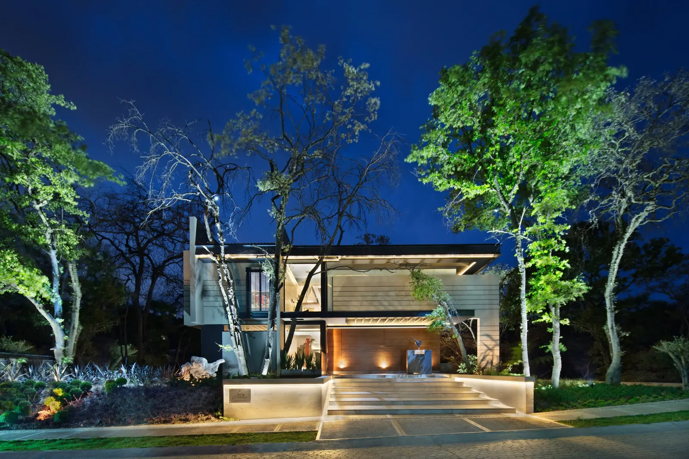
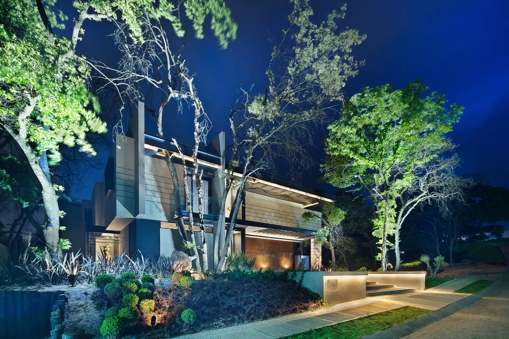
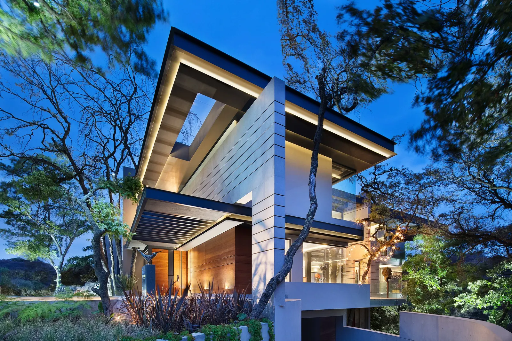
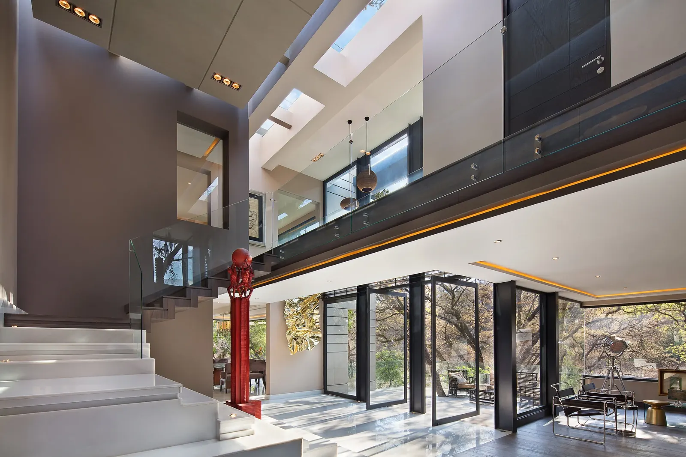
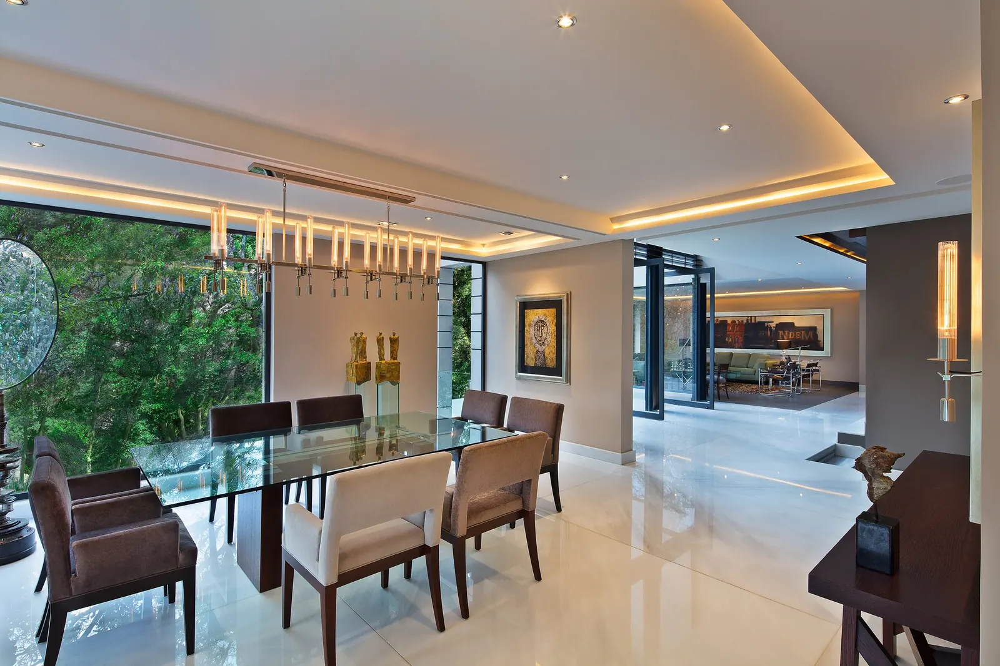
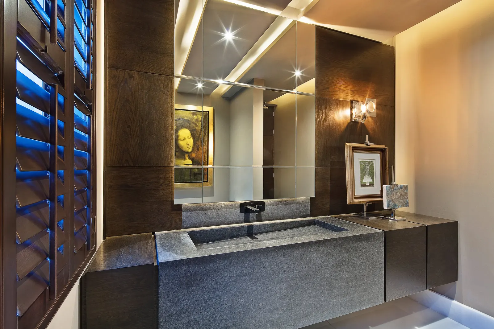
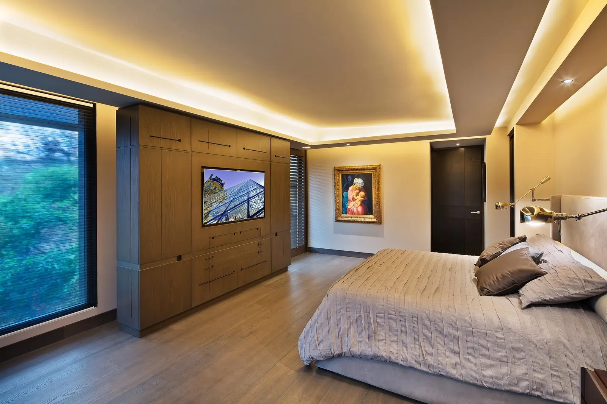
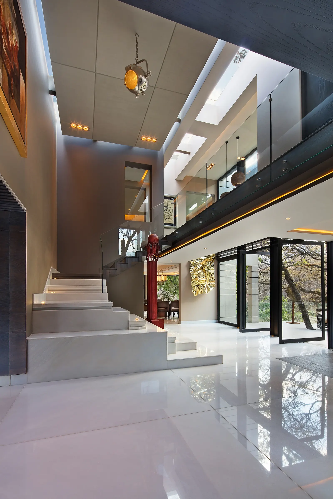
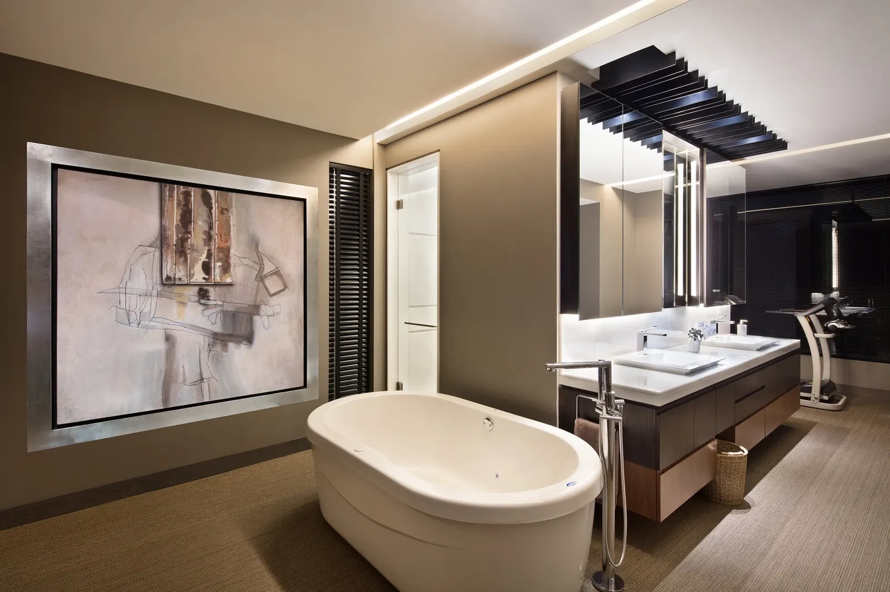

Proyecto
mimbres
Residencia










Aquí el interior lleva la voz: materiales que piden la mano, texturas tejidas y una luz cálida que sostiene las estancias a lo largo del día. La fachada acompaña; lo que se recuerda es cómo se está adentro.
Siguiente proyecto
 siguiente proyecto: arboro residencial
P-001
siguiente proyecto: arboro residencial
P-001
así empieza también el tuyo
Cada trazo de esta galería empieza en una conversación sobre una forma de vivir. La tuya puede ser la próxima.
Agenda una primera conversación